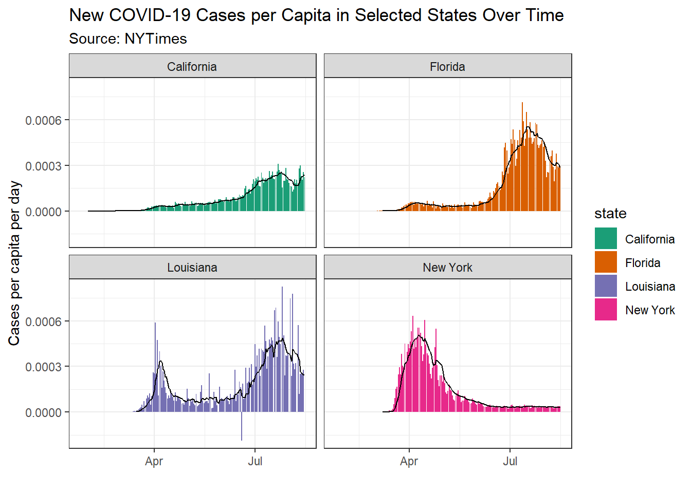
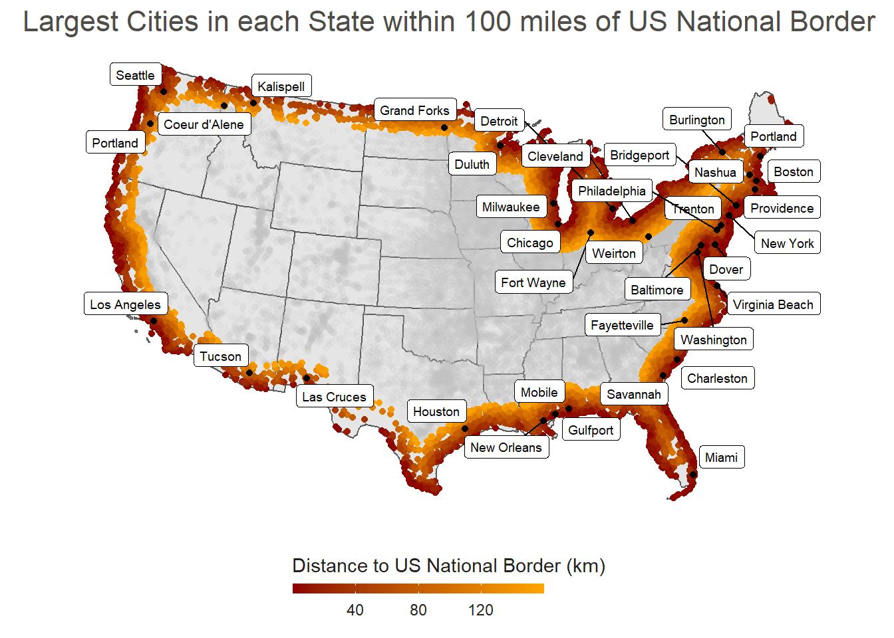

Projects
R Packages
fipio
fipio
- Lightweight & performant FIPS code information retrieval utilities.
- Funded by the Urban Flooding Open Knowledge Network (UF-OKN).
spress
spress
- R package and C++ library for geospatial space-division based compression and encoding.
- Funded by the Urban Flooding Open Knowledge Network (UF-OKN).
UCSB | GEOG 176C w/ Dr. Krzysztof Janowicz
BURNDEX: Spa…
BURNDEX: Spatial-temporal Burning Index Forecasting
- Supplementing Chandler Burning Index forecasts with a machine learning approach.
- Built together with Angus Watters.
UCSB | GEOG 176A w/ Dr. Mike Johnson
Tracking COV…

Tracking COVID-19 Data
- Parsed real-world data using tidyverse functions and plotted using ggplot2.
- Used statistical methods for analyzing confirmed COVID-19 cases.
- Analyzed COVID-19’s weighted mean center travel across the United States.
Analyzing Sp…

Analyzing Spatial Data in the US
- Gathered spatial data about US cities and their relation to national borders using tidyverse and sf libraries.
- Used gghighlight and ggplot2 to visualize spatial data, and sf to calculate distances.
- Analyzed controversial Federal Agencies’ claims based on an ACLU article to verify statistics given.
Point-in-Pol…

Point-in-Polygon Analysis with Tessellations
- Generated and analyzed tessellated spatial datasets, such as: square and hexagonal coverages, Voronoi tessellations, and Delaunay triangulation.
- Performed point-in-polygon analysis using US Dams dataset from US Army Corps of Engineers.
- Created a leaflet interactive map to analyze dams at risk for floods along the Mississippi river system.
Flood Analys…

Flood Analysis using Remote Sensing
- Using Landsat Data generated rasters and computed band combinations for surface water features.
- Utilized statistical methods, namely k-means clustering to highlight potential flood areas.
- Applied flood data to visually identify at-risk areas using leaflet/mapview.
Flood Risk i…

Flood Risk in Mission Creek: Past, Present, Future
- Pulled data from the USGS and OpenStreetMap to assess the flood risk of buildings near a river system.
- Used whitebox to create a Height Above Nearest Drainage raster for a specific AOI.
- Created a Flood Inudation Map Library to observe flood impact on surrounding buildings.